Lecture 1: Why Systems for Machine Learning
The scene: a new model drops, and your GPUs say no
A new large language model drops. You rent a cluster of A100s (NVIDIA data-center GPUs) to fine-tune it, that is, to keep training it briefly on new data so it follows instructions. The job starts, the weights load, and the process dies with three words: out of memory. This is not a bug in your code. This is the default experience of working with large models in 2024, and it is the reason this course exists.
The lecture opens with the bet the whole field is making. Large language models are neural networks trained to predict text, and they keep getting bigger because bigger keeps working. Kaplan et al. (2020) showed that performance improves smoothly with three inputs: the amount of compute used, the dataset size, and the number of parameters in the model. These are the scaling laws: predictable gains from predictable scaling.
Size also buys abilities that small models never show. GPT-3 demonstrated few-shot learning: the ability to do a new task from a handful of examples (Brown et al., 2020). Chain-of-thought reasoning, where the model writes out intermediate steps, emerged the same way (Wei et al., 2022). These are emergent behaviors: capabilities that appear only past a size threshold. You cannot get them by training a small model cleverly. The size is the point.
And size demands a second step. A pretrained model predicts the next token on web text. Ask it to translate “cheese” to French and it may keep writing translation examples instead of answering. Fine-tuning updates the model’s weights on instruction-following data so it answers instead of completing. Thoppilan et al. (LaMDA, 2022) is the lecture’s example: the same base model, fine-tuned for dialog, becomes an assistant.
So the field’s plan is fixed: train big, then fine-tune. Now the question this course asks: what does that plan cost, and who pays?
The first plan: buy bigger hardware
The naive answer is hardware. Models grow, so buy better chips. This works only if chips improve as fast as models grow. They do not.
Sevilla et al. (2022) plotted training compute across three eras of machine learning. In the deep learning era, training compute grows 32x every 2 years. Moore’s law, the pace of hardware improvement, gives roughly 2x every 2 years. The gap is 16x per 2-year window, and it compounds. Each generation of models demands far more than new hardware supplies.
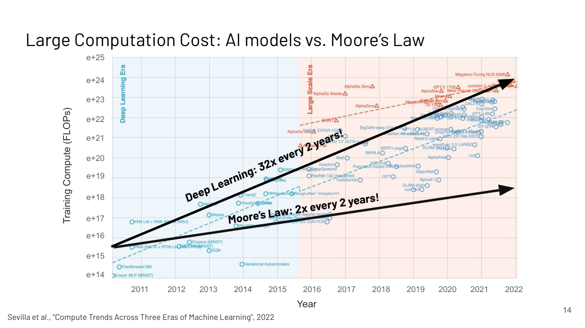
Work the arithmetic. Two years pass. Hardware doubles. Model compute demand multiplies by 32. The missing factor of 16 must come from somewhere else: better algorithms, better parallelism, better utilization. That missing factor is this course.
The second gap is memory. Model size follows the same steep curve, but accelerator memory is nearly flat: the V100 holds 32 GB, the TPUv3 holds 32 GB, the A100 holds 40 or 80 GB. The largest models sit far above all of them.
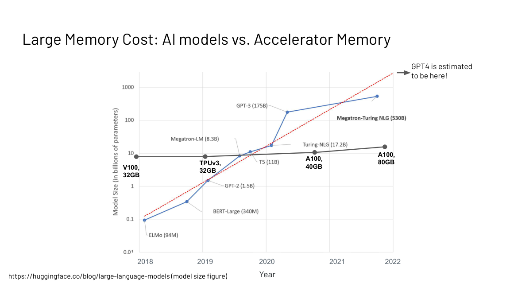
That out-of-memory error from the opening scene is now explained. The weights do not fit. No setting in your training script fixes a 32 GB card facing a 100 GB model. The options are to shrink the model, split it across devices, or both. Every later lecture is one of those options.
The third gap: paper speed is not wall-clock speed
The third gap is the subtlest, and the lecture returns to it in every later lecture. An algorithm can be better on paper and slower on the machine.
The lecture’s example is attention, the transformer’s core operation. Each of N tokens scores all N others, so the score matrix holds N squared entries. A fancy new linear attention algorithm scales as O(N) in sequence length, against O(N squared) for standard attention. On paper it wins. But FlashAttention, a hardware-aware implementation of the exact O(N squared) algorithm, runs faster in measured wall-clock time.
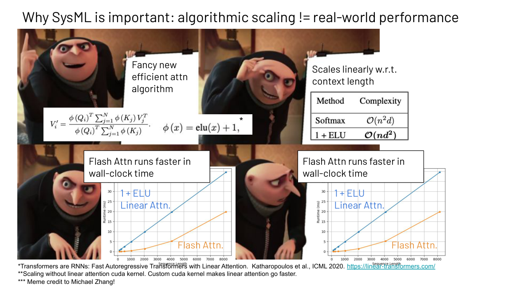
Why? Big-O notation hides constants and ignores how an algorithm uses memory. A linear algorithm that ignores the memory hierarchy can lose to a quadratic one that respects it. The rule the course repeats: judge algorithms by measured runtime on the target hardware, never by asymptotics alone. Lecture 3 makes this quantitative. Lecture 6 shows exactly why FlashAttention wins.
A second cost split runs through the whole course. Training is a large upfront bill: tens of millions of dollars for a frontier model. Inference, running the model for one input, is cheap per call, under $0.0001 for a large model, but it accumulates with every user. The lecture’s production example shows inference cost rising steadily as the user base grows. Design for training when the bill is upfront. Design for serving when the bill compounds.
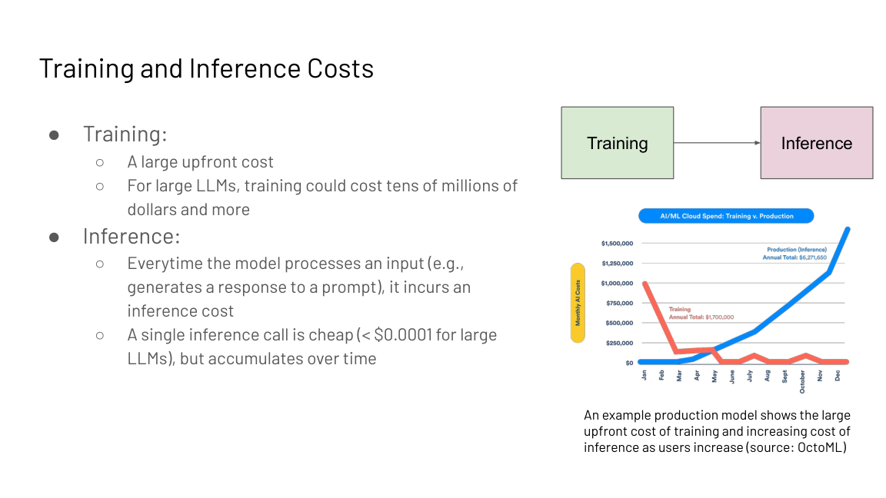
Three gaps, each demonstrated: compute demand outruns hardware (32x vs 2x), model size outruns memory (the OOM scene), and asymptotics outrun wall-clock reality (the attention meme). Hardware alone cannot close any of them.
The key question
If buying bigger chips cannot close the gap, what can? The lecture’s answer is the whole stack. Efficiency is not one trick. It is a lever at every layer, and the levers compose.
Four layers of levers
The stack has four layers: data, model, software, hardware. Each gets its own efficiency lever, and the lecture gives a concrete win for each.
Model: quantization. Training and serving in 32-bit floating point is desirable for its wide dynamic range, but 8-bit integer arithmetic sharply improves memory and speed. The catch: naive quantization degrades accuracy unacceptably, and it scales poorly past about 6B parameters. The fix is model-aware. Dettmers et al. (LLM.int8(), 2022) diagnosed the failure: outlier features in large transformers break naive 8-bit quantization. Their outlier-aware mixed-precision decomposition keeps most of the matrix in INT8 and handles outliers in FP16 (a 16-bit floating-point format), enabling inference up to 175B parameters without accuracy loss. Quantization is not a blunt bit-width cut. It is a diagnosis of which values actually break, then a targeted fix. Lecture 7 derives the classical schemes.
Subchapter: why naive quantization breaks
Memory first. One billion weights in FP32 need 4 GB. The same weights in INT8 need 1 GB. That factor of 4 is the whole pitch: quantization stores each number in fewer bits.
The toy that shows the failure: eight weights, [0.5, -0.3, 0.8, 0.2, 127.0, -0.4, 0.6, 0.1]. INT8 spans -128 to 127. Naive quantization scales by the max: 127.0 maps to 127, and 0.5 maps to round(0.5 / 127 * 127) = round(0.5) = 0. The small weights round to 0 or 1. The outlier keeps 127. The matrix becomes the outlier plus near-zeros. Accuracy collapses.
Subchapter: the outlier fix (LLM.int8)
Dettmers et al. (LLM.int8, 2022) found exactly this in real models. Large transformers grow a few feature dimensions with huge magnitudes, the outliers, while the rest stay small. The fix is surgical: quantize 99.9 percent of the matrix to INT8 and keep the outlier columns in FP16. Memory still drops by nearly 4x. Accuracy holds. The paper ran OPT-175B this way with no accuracy loss.
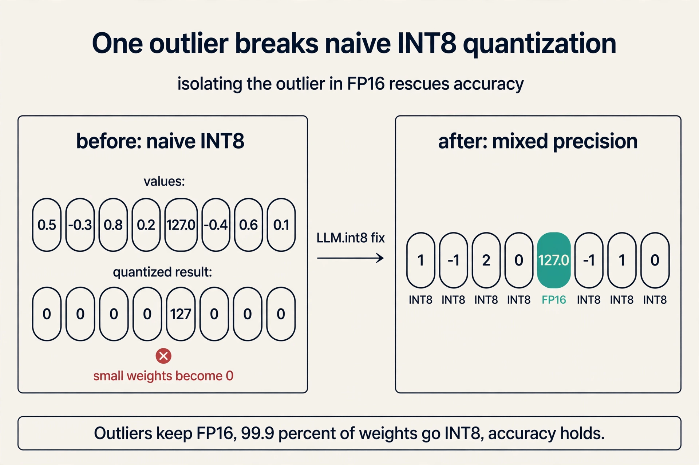
Subchapter: the quantization family (GPTQ, AWQ, FP8)
LLM.int8 stops at 8 bits. The next step down is 4 bits, another factor of 2 in memory. Two schemes dominate.
GPTQ quantizes layer by layer, using the Hessian (the matrix of second derivatives) to spread each weight’s rounding error onto the weights that remain unquantized. It needs one calibration pass over sample text. Most public 4-bit Llama quants on HuggingFace are GPTQ [uncertain].
AWQ (activation-aware weight quantization) protects the small fraction of weight channels that activations hit hardest: it scales those channels up before quantizing so their rounding error shrinks. Also needs calibration. vLLM and AutoAWQ ship AWQ kernels.
| Scheme | Bits | What it protects | Calibration data | Public use |
|---|---|---|---|---|
| LLM.int8 | 8 | outlier columns in FP16 | none, dynamic | HuggingFace transformers |
| GPTQ | 4 | rounding error spread via Hessian | yes, small set | most Llama 4-bit quants [uncertain] |
| AWQ | 4 | salient weights by activation scale | yes, small set | vLLM, AutoAWQ |
| FP8 | 8 | range via E4M3/E5M2 formats | none | DeepSeek-V3 training |
FP8 is a different animal: a floating format, not integer, used during training itself. DeepSeek-V3 trained in FP8, public in its paper. DeepSeek-V4 is reported to have moved to NVFP4, a 4-bit microscaling format [uncertain]. What quantization GPT-5 uses, if any, is not public. Unknown.
Model: sparsity. Traditionally neural networks are dense: each input is processed by the entire model. Mixture-of-experts (MoE) is dynamic: large weight matrices are replaced by a mixture of smaller matrices called experts, and a gating function routes each input to a small number of them. Shazeer, Mirhoseini et al. (2017) introduced the sparsely-gated MoE layer. Fedus et al. (2021) applied it to transformers. Total capacity grows with expert count while cost per token stays near flat. The systems cost moves to routing, load balancing, and communication, which is why MoE is a systems topic as much as an architecture topic.
Subchapter: MoE routing, and why load balancing is the real bill
The gate picks experts per token. Original MoE (Shazeer et al. 2017): top-2 of up to 2048 experts. Switch Transformers (Fedus et al. 2021): top-1, simpler and faster. Fewer active experts means less compute per token but a weaker routing choice.
The toy: 4 tokens, 8 experts, top-2 routing. The gate assigns token 1 to {2, 5}, token 2 to {2, 7}, token 3 to {2, 3}, token 4 to {5, 2}. Expert 2 gets 4 assignments. Experts 1, 4, 6, 8 get zero. Left alone, the gate keeps picking the expert that already works, and the rest starve. That is expert collapse: you paid for 8 experts and use 1. The fix is an auxiliary loss that penalizes uneven assignment and forces the gate to spread tokens. Then experts specialize and the capacity pays off.
Then the systems bill: experts live on different devices, so each token’s dispatch is an all-to-all communication across the network. That is expert parallelism, and it is why MoE appears in a systems course. The gate’s decision is a network operation.
What is used where: Mixtral 8x7B routes top-2 of 8 experts, public. DeepSeek-V3 routes 8 of 256 fine-grained experts plus one shared expert, public. GPT-4 is rumored to be MoE. Not confirmed. Unknown.
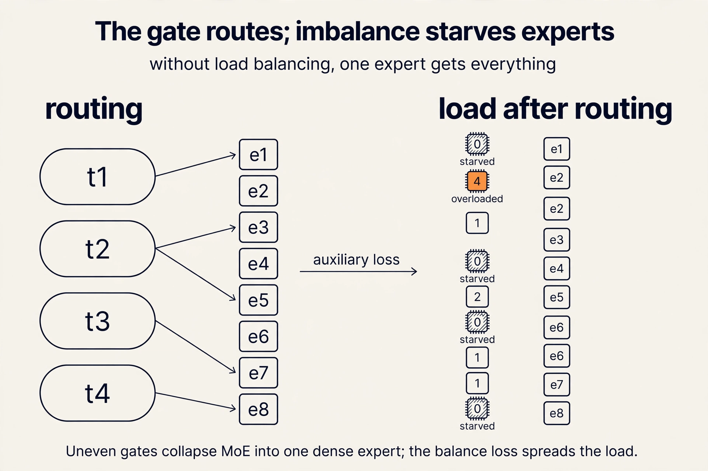
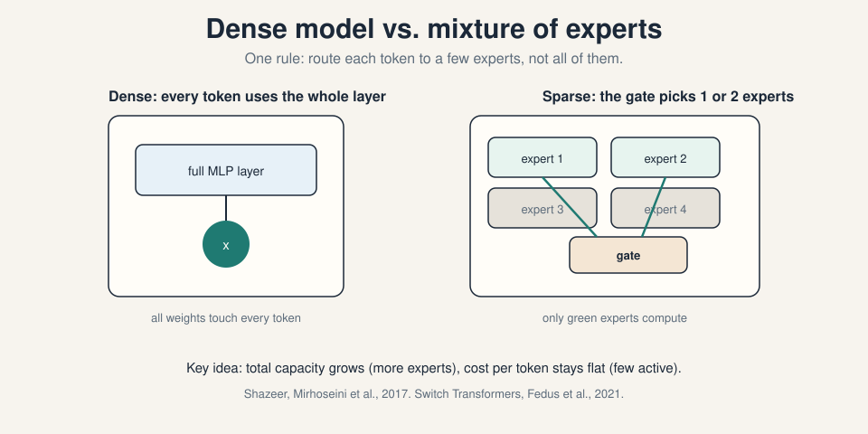
Software: parallelism and mapping. Scaling across devices needs parallelization strategies, and the strategy must match the hardware. Traditional model parallelism partitions the model into disjoint sub-models. Tensor parallelism partitions tensors within the same operation. The tradeoff is direct: model parallelism communicates less but idles more. Tensor parallelism idles less but communicates more, so it demands fast interconnects.
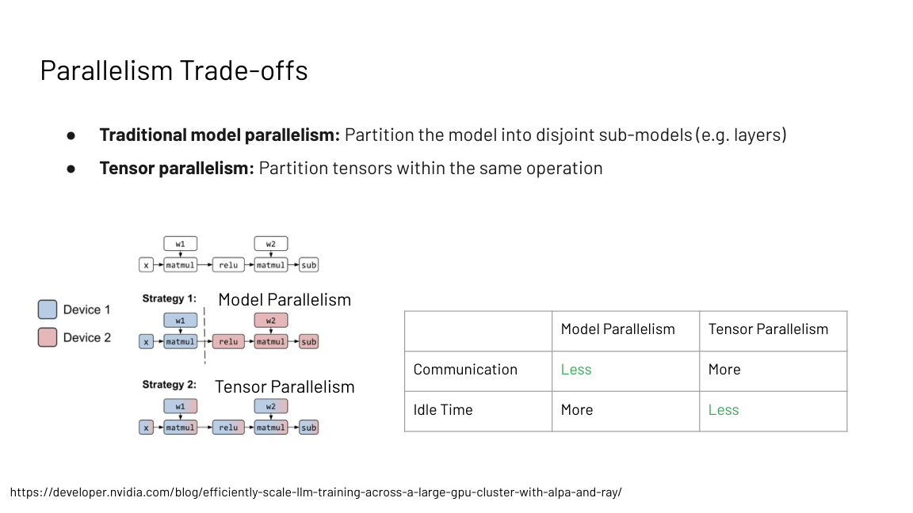
And the network decides where each style lives. Connections inside one machine are orders of magnitude faster than networking between machines. Communication-heavy patterns stay inside the node. Rarer, larger patterns span the cluster. Lecture 10 derives all three strategies.
Subchapter: the parallelism family, and where each lives
Three ways to split the work. The network decides where each lives.
Data parallelism. Copy the whole model to each GPU. Split the batch (the group of training examples processed in one step). Each GPU trains on its slice, then all-reduce (a collective operation that leaves every GPU holding the sum of all GPUs’ gradients) syncs the gradients. Memory need: the full model must fit on one GPU. Communication: one gradient sync per step, large but infrequent. Spans nodes happily.
Tensor parallelism. Split single operations across GPUs. One matrix multiply becomes two halves on two GPUs, results combined. Memory need: the model shards, so 70B in FP16 (140 GB) fits across two 80 GB cards. Communication: every layer, small and frequent. Stays inside one machine, on NVLink (NVIDIA’s fast GPU-to-GPU link, detailed in L05).
Pipeline parallelism. Split the layers. GPU 0 holds layers 1-8, GPU 1 holds 9-16. Feed microbatches through. Memory need: shards like tensor parallel. Communication: only activations at the boundary, rare. Spans nodes. The cost is idle time: the pipeline drains and fills, the bubble.
The rule: frequent fine-grained communication stays intra-node. Rare coarse communication spans the cluster. Llama 3 trained on 16,384 H100s with data plus model plus pipeline parallelism, public in the Meta paper. Megatron-LM is the public tensor-parallel implementation. DeepSeek-V3’s DualPipe, a pipeline schedule that overlaps communication with computation to hide the cost, is public in its paper. GPT-4’s strategy is not public. Unknown.
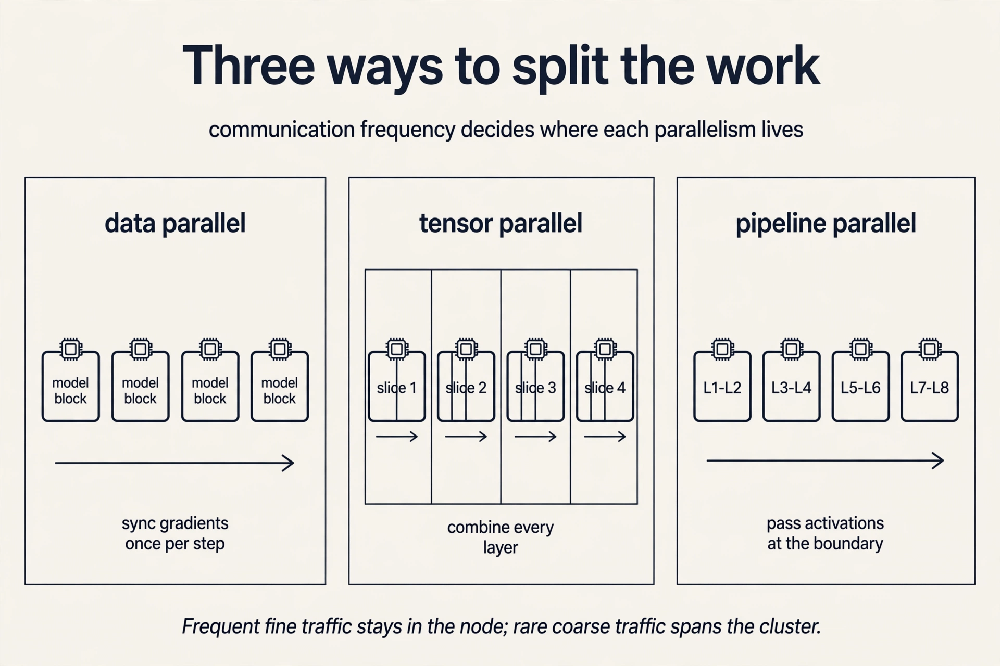
Hardware: design for the device, not the FLOP count. EfficientNet introduced depthwise convolutions with fewer FLOPs (floating-point operations) than competing ResNets. But the operation took 5.00% of FLOPs and 65.30% of runtime. Fewer FLOPs, more time.
| Operation | Share of FLOPs | Share of runtime |
|---|---|---|
| DepthwiseConv2D | 5.00% | 65.30% |
| Conv2D | 94.67% | 34.20% |
| Other | 0.33% | 0.50% |
The operation did not suit the hardware, so compute utilization collapsed. FLOPs measure work, not speed. Speed is work divided by achieved throughput, and achieved throughput depends on memory access patterns and the device’s strengths.
Subchapter: FLOPs lie, utilization decides
The table above is the whole lesson in numbers. DepthwiseConv2D: 5.00 percent of FLOPs, 65.30 percent of runtime. Conv2D: 94.67 percent of FLOPs, 34.20 percent of runtime. Same model, same chip. One operation starves the hardware.
Speed is not work. Speed is work divided by achieved throughput. The depthwise convolution does little work per memory access, so the chip waits on memory instead of computing. Achieved throughput collapses. The operation looks cheap in FLOP count and runs expensive on the clock.
The roofline model (L03) turns this into a number: every kernel is either compute-bound or memory-bound, and the achieved FLOPs per second tell you which. If your clever low-FLOP operation lands memory-bound, you lost. This is why the course judges everything by measured runtime.
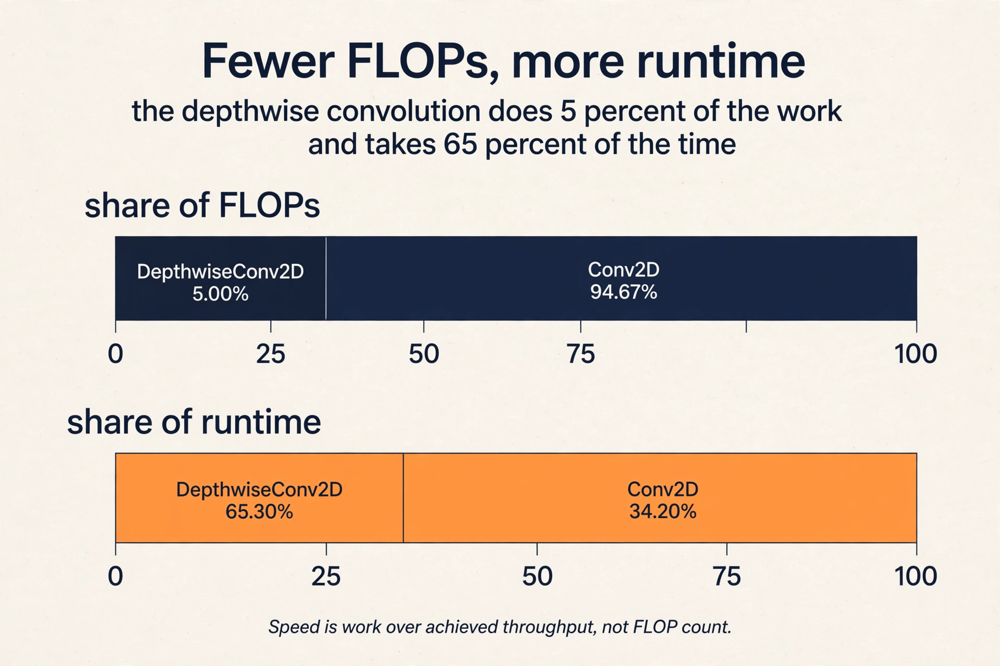
The final lever is co-design. The FAST paper (Zhang et al., ASPLOS 2022) searched the hardware and software stack together: the best datapath, scheduling, and fusion choices differ across vision and language workloads, so searching them jointly delivers multi-fold gains over optimizing one layer alone.
Subchapter: what FAST actually searched
FAST (Zhang et al., ASPLOS 2022) treated the stack as one search space: the datapath (how the chip moves data), the schedule (in what order operations run), and the fusion (which operations merge into one kernel). The search ran over vision and language workloads together.
The finding that matters: the best choices differ by workload. A datapath tuned for convolutions is not the one tuned for attention. Optimizing one layer alone leaves the joint optimum on the table. Joint search delivered multi-fold gains over single-layer optimization. The price is portability: the answer is a chip for one workload family, not a general GPU. Co-design trades generality for speed, and the search makes the trade explicit.
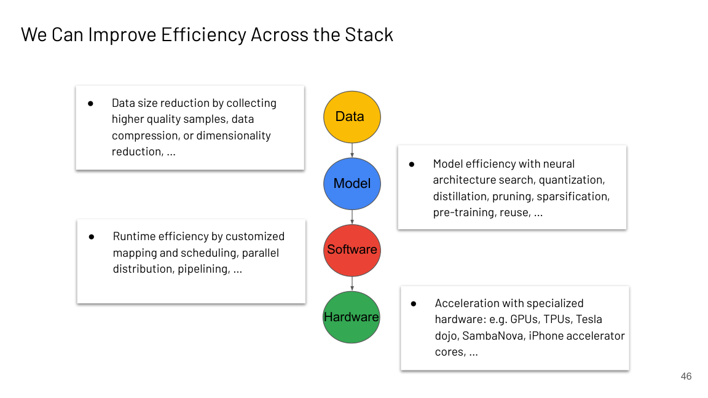
What is used where: the real models
Every lever in this chapter ships in a production model. Same stack, different answers. Facts verified against public sources as of October 2026.
| Model | Public efficiency levers | Why these |
|---|---|---|
| DeepSeek-V4 [uncertain: public details unconfirmed as of Oct 2026] | reported NVFP4 training [uncertain], hybrid sparse attention combining CSA and HCA patterns [uncertain: the expansions of these acronyms are not confirmed in public sources as of Oct 2026], MoE [uncertain], 1M context [uncertain] | claimed variants V4-Pro 1.6T total / 49B active and V4-Flash 284B / 13B active [uncertain]; MIT license [uncertain] |
| DeepSeek-V3 (Dec 2024) | FP8 training, MLA attention (multi-head latent attention: keys and values are compressed into a small latent vector, which shrinks the KV cache), MoE (256 routed + 1 shared expert, 8 active), DualPipe parallelism | 671B parameters, 37B active per token; the full-stack cost playbook |
| Llama 4 Maverick (Apr 2025) | MoE (128 experts, 17B active of 400B), 1M context | the entire Llama 4 family went MoE; open weights |
| Mixtral 8x7B | MoE top-2 of 8, sliding window, GQA (grouped-query attention: query heads share a smaller set of key and value heads, which shrinks the KV cache) | open-weights MoE; sparse compute with long context |
| Gemini 3.1 Pro (Feb 2026) | sparse MoE transformer [uncertain: architecture not confirmed in public sources as of Oct 2026], 1M context | long context plus reasoning as the product feature [uncertain: exact counts not public] |
| GPT-5 (Aug 2025) | not public | unknown; internals unconfirmed |
Read it as the course in miniature. DeepSeek-V3 is the full stack: train cheaper (FP8), serve cheaper (MLA, MoE), scale wider (DualPipe). DeepSeek-V4’s reported additions (NVFP4 training, hybrid attention) are unconfirmed [uncertain]. Llama 4 shows even Meta moved its flagship line to MoE. GPT-5 reminds you that the table records only what makers announce.
Mapping back: each gap gets its levers
Each of the three gaps now has an answer, by name:
| Gap | Levers that close it |
|---|---|
| Compute demand outruns hardware (32x vs 2x) | Parallelism across devices, hardware-aware kernels, full-stack co-search |
| Model size outruns memory (the OOM scene) | Quantization, sparsity, MoE, splitting weights across devices |
| Asymptotics outrun wall-clock (the meme) | Measure on target hardware; design for the memory hierarchy, not big-O |
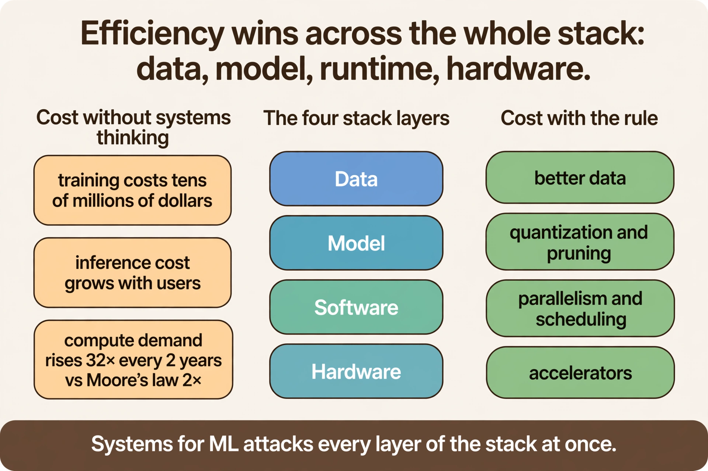
The honest price
None of these levers is free. Quantization risks accuracy and needs model-aware fixes past 6B parameters. MoE trades dense simplicity for routing and load-balancing complexity. Parallelism trades memory for communication overhead. Hardware-aware design trades portability for speed: what wins on an A100 may not win elsewhere. The course exists because the tradeoffs are real and the numbers decide them.
This chapter was the economic case. The rest of the course is the machinery: how to measure the bottleneck (L03), what the machine actually looks like (L05), what each operation costs (L04, L06), how to shrink the model (L07), how to adapt it cheaply (L08), what replaces attention (L09), and how to split the work across a cluster (L10).
Two reasons. Scaling laws show smooth, predictable gains from more compute, data, and parameters, so size is a reliable lever. Emergent abilities such as few-shot learning and chain of thought appear only at large scale, so some capabilities have no small-model equivalent. Systems work exists because this appetite for scale collides with hardware limits. Money and memory. Training a frontier model costs tens of millions of dollars, and model size outruns accelerator memory: GPT-4-scale weights sit far above an A100’s 40 or 80 GB [uncertain: GPT-4’s actual size is not public; this is the lecture’s placement, not a confirmed number]. That is why the course opens with memory and compute, not with architectures.
Deep learning training compute grows 32x every 2 years. Moore’s law gives roughly 2x every 2 years. The 16x gap per 2-year window compounds, so each generation of models demands far more than new hardware supplies. Every missing factor must come from better algorithms, better parallelism, or better utilization. No. Hardware still sets the ceiling: peak FLOPs and memory bandwidth bound every roofline analysis in Lecture 3. The point is that hardware alone cannot close the gap, so systems techniques carry the rest.
Not necessarily. Big-O hides constants and ignores memory behavior. The lecture’s example is linear attention versus FlashAttention: the linear algorithm has better asymptotics, but FlashAttention wins in wall-clock time because it is hardware-aware. Always profile on the target device. It means the implementation accounts for the memory hierarchy: SRAM versus HBM, tiling to keep data on-chip, and fusion to avoid round trips. Those decisions live in Lectures 3, 5, and 6.
Three, and the course covers each. Shrink the model: quantization and sparsity (Lectures 1 and 7). Split the model: parallelism across devices (Lecture 10). Or shrink what you store per token: KV cache management (Lecture 4). The OOM is the memory wall made concrete: model size grows steeply while the A100 holds 40 or 80 GB.
Follow-up: Which do you try first? Shrink the model: it needs no extra hardware. Quantization cuts memory ~4x with INT8 (and more with INT4) with minimal quality loss (Lecture 7). If that is not enough, try parallelism (Lecture 10). Touch the KV cache (Lecture 4) only after the model itself fits: cache tricks do not save a model that is too big to load.
Start with the toy: weights [0.5, -0.3, 0.8, 0.2, 127.0, -0.4, 0.6, 0.1]. INT8 covers -128 to 127, so naive quantization scales everything by the max. The outlier 127.0 becomes 127. The small weights round to 0 or 1. The matrix is now the outlier plus near-zeros, and accuracy collapses. Dettmers et al. found real large transformers grow such outlier feature dimensions. The fix: keep the outlier columns (about 0.1 percent of weights) in FP16 and quantize the rest to INT8. Memory still drops nearly 4x. The paper ran OPT-175B with no accuracy loss. Outliers emerge with scale. Small models have calm activation ranges, so naive INT8 works. Past about 6B, a few dimensions grow huge magnitudes, and one scale factor can no longer serve both the outliers and the rest. The diagnosis is scale-dependent, which is why the fix is model-aware rather than a blunt bit cut.
Take 4 tokens and 8 experts with top-2 routing. The gate assigns token 1 to experts {2, 5}, token 2 to {2, 7}, token 3 to {2, 3}, token 4 to {5, 2}. Expert 2 gets 4 assignments. Experts 1, 4, 6, 8 get zero. Left alone, the gate keeps picking the one expert that already works, and the rest starve. That is expert collapse: you paid for 8 experts and use 1. The fix is an auxiliary loss that penalizes uneven assignment, forcing the gate to spread tokens. Then experts specialize and the capacity pays off. Experts live on different devices. Every routing decision is an all-to-all dispatch across the network. The gate is a communication pattern, and its cost depends on interconnect bandwidth. That is expert parallelism, and it is priced in Lecture 10.
Start with the memory wall. 70B weights in FP16 need 140 GB. No single 40 GB card holds them. First lever: quantize. INT4 (GPTQ or AWQ) brings weights to 35 GB. That fits one card, barely, before the KV cache. Second lever: split. Tensor parallel across 2 GPUs gives 70 GB of headroom for the cache and keeps the frequent communication on NVLink. Third lever: FlashAttention for the attention kernel, since decode is memory-bound (L04, L06). Fourth: manage the KV cache per token, because at long context it becomes the new wall. The interview signal: name the binding constraint first (weights do not fit), then stack levers in the order that removes constraints. Quantization needs no extra hardware and cuts every downstream cost: smaller weights mean less memory per GPU, smaller activations to communicate, and fewer GPUs to buy. Parallelism spends communication to buy memory. Spend the free lever first.
Recap: the whole lesson on one screen
The story in eight steps. Each step answers the one before it.
- The plan is scale. Scaling laws (Kaplan 2020) give predictable gains from compute, data, and parameters. Emergent abilities like few-shot learning and chain of thought exist only at large scale.
- Pretrained models need fine-tuning. Next-token prediction completes text. It does not follow instructions. Fine-tuning on instruction data makes the assistant.
- Hardware cannot keep up. Training compute grows 32x per 2 years. Moore’s law gives 2x. The 16x gap per window compounds and must come from systems work.
- Memory is the wall. Accelerator memory sits near 32 to 80 GB while models keep growing. Out-of-memory is the default failure, not the exception.
- Asymptotics are not wall-clock. Linear attention wins on big-O. FlashAttention wins on the GPU. Judge by measured runtime on target hardware.
- Two different bills. Training is tens of millions upfront. Inference is under $0.0001 per call and compounds with users. Design for the bill you pay.
- The stack has four layers of levers. Data (quality, compression), model (quantization, MoE sparsity), software (parallelism, mapping), hardware (accelerators, co-design). Each gap gets its levers.
- Nothing is free. Every lever trades something: accuracy, complexity, communication, or portability. The rest of the course prices each one.
Official sources and further reading
Official: - Course site: https://cs229s.stanford.edu/fall2024/ - Introduction slide deck (Fall 2023 headers. Fall 2024 calendar lecture): the source of the figures above.
Further reading: - Sevilla et al., “Compute Trends Across Three Eras of Machine Learning” (2022): the source of the 32x figure. - Kaplan et al., “Scaling Laws for Neural Language Models” (2020): why size keeps winning. - Dettmers et al., “LLM.int8()” (2022): model-aware quantization at 175B scale. - Shazeer, Mirhoseini et al., “Outrageously Large Neural Networks” (2017): the original MoE paper. - Fedus et al., “Switch Transformers” (2021): MoE for transformers. - Zhang et al., “FAST”, ASPLOS 2022: full-stack hardware-software co-search.
Caveats from these sources. The deck headers say Fall 2023 while the calendar is Fall 2024. Lecture numbering follows the Fall 2024 calendar. The compute-trends and memory-wall figures are estimates, and the “GPT-4 is estimated to be here” markers are the lecturer’s placement, not confirmed model sizes. Fine-tuning as alignment (LaMDA) is presented as motivation. The course’s technical treatment of fine-tuning is L08.
Go deeper
- Switch Transformer paper walkthrough (Yannic Kilcher): https://www.youtube.com/watch?v=ccBMRryxGog
- MoE from scratch: routing and load balancing (Switch): https://www.youtube-nocookie.com/embed/YZKMtxccocA
- The Engineering Behind LLM Inference: Quantization (GPTQ, AWQ, FP8, outliers): https://www.youtube.com/watch?v=1JWnEze9V5g
- LLM.int8() paper (Dettmers et al., 2022): https://arxiv.org/abs/2208.07339
- Switch Transformers (Fedus et al., 2021): https://arxiv.org/abs/2101.03961
- FAST full-stack co-search (Zhang et al., ASPLOS 2022): https://dl.acm.org/doi/10.1145/3503222.3507767
Connections to the other courses
- CS336 L05/L06: the GPU memory hierarchy and kernel view behind the hardware-efficiency claims. The device block is defined in L05 here and reused by MS&E435.
- CS336 L07/L08: data, tensor, and pipeline parallelism in full. CS229S L10 gives the framing and the Megatron view.
- CS336 L10: inference costs and KV caching continue the training-versus-inference cost split.
- CS329H: RLHF and preference modeling, the systems view of which is L08.
Coverage map
Every lecture concept mapped to the line that teaches it. File: l01-introduction.md.
| Lecture concept | Anchor | Line |
|---|---|---|
| OOM opening scene (memory wall) | “out of memory” | 40 |
| Scaling laws (Kaplan 2020) | “scaling laws” | 49 |
| Emergent behaviors (few-shot, CoT) | “emergent behaviors” | 56 |
| Fine-tuning (LaMDA example) | “Fine-tuning” | 64 |
| Compute trends: 32x vs Moore 2x | “32x every 2 years” | 79 |
| Accelerator memory wall (V100/A100) | “V100 holds” | 93 |
| Paper speed vs wall-clock (attention meme) | “FlashAttention” | 116 |
| Training vs inference cost split | “upfront bill” | 131 |
| The key question (what closes the gap) | “key question” | 146 |
| Quantization lever (LLM.int8) | “LLM.int8” | 163 |
| Naive INT8 failure (outlier toy) | “toy that shows the failure” | 178 |
| 4-bit family: GPTQ, AWQ, FP8 | “GPTQ” | 197 |
| Sparsity lever (MoE) | “Mixture-of-experts” | 229 |
| MoE routing (top-2) and expert collapse | “expert collapse” / “top-2 of 8” | 251 / 261 |
| Parallelism: data | “Data parallelism” | 292 |
| Parallelism: tensor | “Tensor parallelism” | 300 |
| Parallelism: pipeline | “Pipeline parallelism” | 307 |
| Hardware lever (FLOPs lie, EfficientNet) | “design for the device” | 324 |
| Full-stack co-search (FAST paper) | “FAST” section | 361 |
| Honest price of the levers | “honest price” | 421 |
Sources
- SLIDESIntroduction slide deck (CS 229S Fall 2023 headers; Fall 2024 calendar lecture)
- PAPERSevilla et al., Compute Trends Across Three Eras of Machine Learning (2022)
- PAPERKaplan et al., Scaling Laws for Neural Language Models (2020)
- PAPERDettmers et al., LLM.int8(): 8-bit Matrix Multiplication for Transformers at Scale (2022)
- PAPERShazeer, Mirhoseini et al., Outrageously Large Neural Networks: The Sparsely-Gated Mixture-of-Experts Layer (2017)
- PAPERZhang et al., FAST: A Full-Stack Search Technique for Domain Optimized Deep Learning Accelerators, ASPLOS 2022